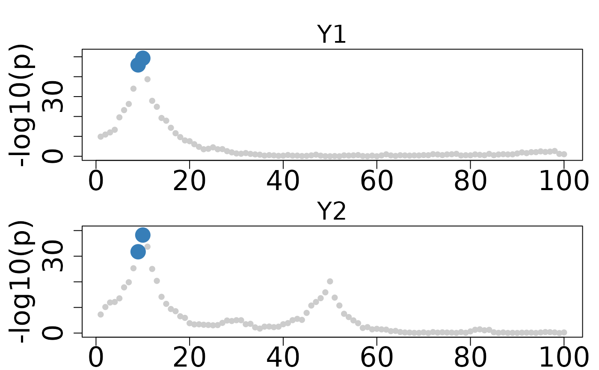
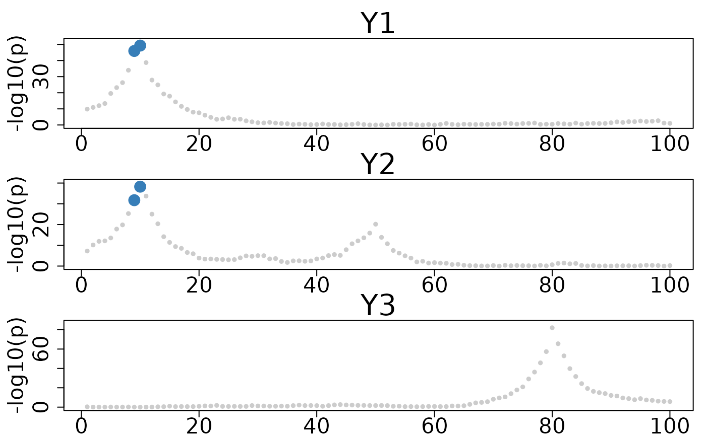

colocboost_plot generates visualization plots for colocalization events from a ColocBoost analysis.
Usage
colocboost_plot(
cb_output,
y = "log10p",
grange = NULL,
plot_cos_idx = NULL,
outcome_idx = NULL,
plot_all_outcome = FALSE,
plot_focal_only = FALSE,
plot_focal_cos_outcome_only = FALSE,
points_color = "grey80",
cos_color = NULL,
add_highlight = FALSE,
add_highlight_idx = NULL,
add_highlight_style = "vertical_lines",
outcome_names = NULL,
plot_cols = 2,
variant_coord = FALSE,
show_top_variables = FALSE,
show_cos_to_uncoloc = FALSE,
show_cos_to_uncoloc_idx = NULL,
show_cos_to_uncoloc_outcome = NULL,
plot_ucos = FALSE,
plot_ucos_idx = NULL,
title_specific = NULL,
ylim_each = TRUE,
outcome_legend_pos = "top",
outcome_legend_size = 1.8,
cos_legend_pos = c(0.05, 0.4, 0.1, 0.5),
show_variable = FALSE,
lab_style = c(2, 1),
axis_style = c(2, 1),
title_style = c(2.5, 2),
...
)Source
See detailed instructions in our tutorial portal: https://statfungen.github.io/colocboost/articles/Visualization_ColocBoost_Output.html
Arguments
- cb_output
Output object from
colocboostanalysis- y
Specifies the y-axis values, default is "log10p" for -log10 transformed marginal association p-values.
- grange
Optional plotting range of x-axis to zoom in to a specific region.
- plot_cos_idx
Optional indices of CoS to plot
- outcome_idx
Optional indices of outcomes to include in the plot.
outcome_idx=NULLto plot only the outcomes having colocalization.- plot_all_outcome
Optional to plot all outcome in the same figure.
- plot_focal_only
Logical, if TRUE only plots colocalization with focal outcome, default is FALSE.
- plot_focal_cos_outcome_only
Logical, if TRUE only plots colocalization including at least on colocalized outcome with focal outcome, default is FALSE.
- points_color
Background color for non-colocalized variables, default is "grey80".
- cos_color
Optional custom colors for CoS.
- add_highlight
Logical, if TRUE adds vertical lines at specified positions, default is FALSE
- add_highlight_idx
Optional indices for add_highlight variables.
- add_highlight_style
Optional style of add_highlight variables, default is "vertical_lines", other choice is "star" - red star.
- outcome_names
Optional vector of outcomes names for the subtitle of each figure.
outcome_names=NULLfor the outcome name shown indata_info.- plot_cols
Number of columns in the plot grid, default is 2. If you have many colocalization. please consider increasing this.
- variant_coord
Logical, if TRUE uses variant coordinates on x-axis, default is FALSE. This is required the variable names including position information.
- show_top_variables
Logical, if TRUE shows top variables for each CoS, default is FALSE
- show_cos_to_uncoloc
Logical, if TRUE shows colocalization to uncolocalized outcomes to diagnose, default is FALSE
- show_cos_to_uncoloc_idx
Optional indices for showing CoS to all uncolocalized outcomes
- show_cos_to_uncoloc_outcome
Optional outcomes for showing CoS to uncolocalized outcomes
- plot_ucos
Logical, if TRUE plots also trait-specific (uncolocalized) sets , default is FALSE
- plot_ucos_idx
Optional indices of trait-specific (uncolocalized) sets to plot when included
- title_specific
Optional specific title to display in plot title
- ylim_each
Logical, if TRUE uses separate y-axis limits for each plot, default is TRUE
- outcome_legend_pos
Position for outcome legend, default is "top"
- outcome_legend_size
Size for outcome legend text, default is 1.2
- cos_legend_pos
Proportion of the legend from (left edge, bottom edge) following by the distance for multiple labels (horizontal-x space, vertical-y space), default as (0.05, 0.4, 0.1, 0.5) at the left - median position
- show_variable
Logical, if TRUE displays variant IDs, default is FALSE
- lab_style
Vector of two numbers for label style (size, boldness), default is c(2, 1)
- axis_style
Vector of two numbers for axis style (size, boldness), default is c(2, 1)
- title_style
Vector of two numbers for title style (size, boldness), default is c(2.5, 2)
- ...
Additional parameters passed to
plotfunctions
Examples
# colocboost example
set.seed(1)
N <- 1000
P <- 100
# Generate X with LD structure
sigma <- 0.9^abs(outer(1:P, 1:P, "-"))
X <- MASS::mvrnorm(N, rep(0, P), sigma)
colnames(X) <- paste0("SNP", 1:P)
L <- 3
true_beta <- matrix(0, P, L)
true_beta[10, 1] <- 0.5 # SNP10 affects trait 1
true_beta[10, 2] <- 0.4 # SNP10 also affects trait 2 (colocalized)
true_beta[50, 2] <- 0.3 # SNP50 only affects trait 2
true_beta[80, 3] <- 0.6 # SNP80 only affects trait 3
Y <- matrix(0, N, L)
for (l in 1:L) {
Y[, l] <- X %*% true_beta[, l] + rnorm(N, 0, 1)
}
res <- colocboost(X = X, Y = Y)
#> Validating input data.
#> Starting gradient boosting algorithm.
#> Gradient boosting for outcome 3 converged after 94 iterations!
#> Gradient boosting for outcome 1 converged after 97 iterations!
#> Gradient boosting for outcome 2 converged after 102 iterations!
#> Performing inference on colocalization events.
#> Extracting colocalization results with pvalue_cutoff = 0.001, cos_npc_cutoff = 0.2, and npc_outcome_cutoff = 0.2.
#> Keep only CoS with cos_npc >= 0.2. For each CoS, keep the outcomes configurations that pvalue of variants for the outcome < 0.001 and npc_outcome >0.2.
colocboost_plot(res, plot_cols = 1)

colocboost_plot(res, plot_cols = 1, outcome_idx = 1:3)
